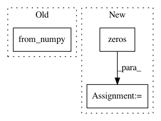

be291b6a6ab8a663beac72fefa213bc7216a1617,geomstats/learning/frechet_mean.py,,_ball_gradient_descent,#Any#Any#Any#Any#Any#Any#,177
Before Change
while convergence > tau and max_iter > iteration:
iteration += 1
grad_tangent = 2 * log(torch.from_numpy(gs.repeat(barycenter, len(points), axis = 0)),
torch.from_numpy(points)) * torch.from_numpy(weights)
grad_tangent = grad_tangent.data.numpy()
cc_barycenter = exp(torch.from_numpy(barycenter),
After Change
barycenter_gs = gs.squeeze(barycenter)
points_gs = gs.squeeze(points)
grad_tangent = gs.zeros((len(points),len(barycenter_gs),len(points[0][0])))
for j in range(len(points)):
for i in range(len(barycenter_gs)):
In pattern: SUPERPATTERN
Frequency: 3
Non-data size: 3
Instances
Project Name: geomstats/geomstats
Commit Name: be291b6a6ab8a663beac72fefa213bc7216a1617
Time: 2020-04-07
Author: hadizaatiti@gmail.com
File Name: geomstats/learning/frechet_mean.py
Class Name:
Method Name: _ball_gradient_descent
Project Name: rusty1s/pytorch_geometric
Commit Name: 307e94868750f515472c3bc7e5d6cbfd51b5eff6
Time: 2019-08-15
Author: matthias.fey@tu-dortmund.de
File Name: test/utils/test_negative_sampling.py
Class Name:
Method Name: test_negative_sampling
Project Name: geomstats/geomstats
Commit Name: a9b58d07768ec06f8718ec2777f2b0293359f5b4
Time: 2020-04-09
Author: hadizaatiti@gmail.com
File Name: geomstats/learning/frechet_mean.py
Class Name:
Method Name: _ball_gradient_descent